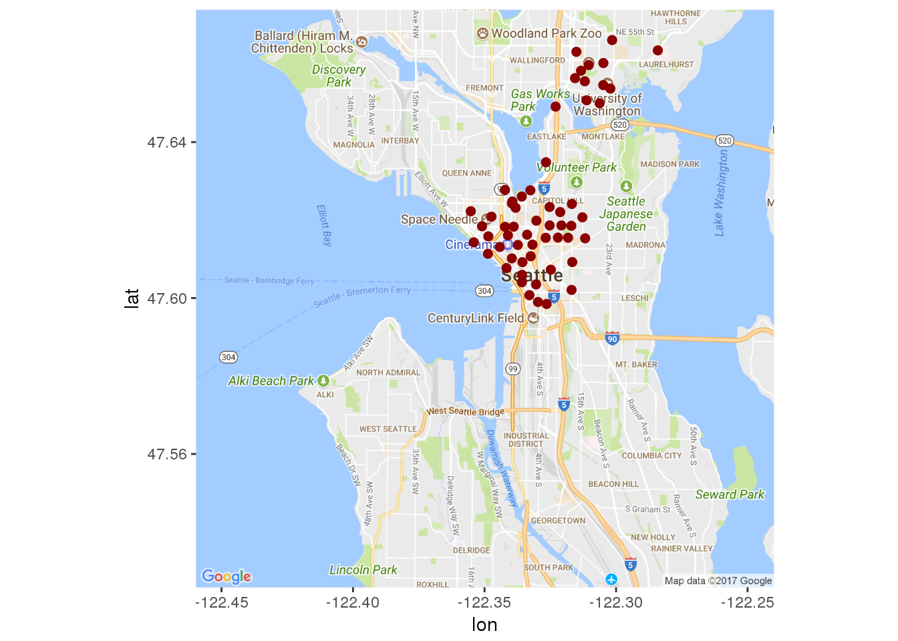

We find the orignal information here.
This report and analysis on Seattle’s bicycle sharing trends. The data includes weather reports for the area, the station locations, and trips taken by cycle riders. Future explorations could include the addition of other forms of public transportation for the Seatle area to better understand commuter travel trends.
Lets take a look at where the rental stations are located in Seattle!
#For show (the graphs , THE EVI-DANCE) Formating the dates
station$install_date <- mdy(station$install_date)
# How many times were new stations installed?
station %>% summarise(n_distinct(install_date))## n_distinct(install_date)
## 1 9# How many stations were installed on each date
station %>% group_by(install_date) %>% summarise(count = n()) %>%
arrange(install_date)## # A tibble: 9 x 2
## install_date count
## <date> <int>
## 1 2014-10-13 50
## 2 2015-05-22 1
## 3 2015-06-12 1
## 4 2015-07-27 1
## 5 2015-09-15 1
## 6 2015-10-29 1
## 7 2016-03-18 1
## 8 2016-07-03 1
## 9 2016-08-09 1station %>% summarise(n_distinct(station_id))## n_distinct(station_id)
## 1 58station_locs <- station %>% group_by(station_id) %>% select(1:4, -2)
mymap <- get_map(location = c(lat = 47.60, lon = -122.35), maptype = "roadmap", zoom = 12)## note : locations should be specified in the lon/lat format, not lat/lon.## Map from URL : http://maps.googleapis.com/maps/api/staticmap?center=47.6,-122.35&zoom=12&size=640x640&scale=2&maptype=roadmap&language=en-EN&sensor=false# Plot a single point for each Station ID
ggmap(mymap) + geom_point(aes(x = long, y = lat), data = station_locs,
alpha = 1, color = "darkred", size = 2)
closeUp <- get_map(location = "Seattle", maptype = "roadmap", zoom = 13)
# Plot a single point for each Station ID
ggmap(closeUp) + geom_point(aes(x = long, y = lat), data = station_locs,
alpha = 1, color = "darkred", size = 3)Stations map Zoomed In
Look at all those stations!
Current Dock Count
Here is a histogram of the number of bikes per station.
dock_change <- station %>%
group_by(station_id) %>%
select(station_id, long, lat, ends_with("dockcount")) %>%
mutate(dock_change = current_dockcount -install_dockcount)
#attempt to recreate map plot thing
closeUp <- get_map(location = "Seattle", maptype = "roadmap", zoom = 13)
ggmap(closeUp) +
geom_point(aes(x = long, y = lat, size = factor(dock_change), color = factor(dock_change)), data = dock_change, alpha = 0.8) +
guides(color = guide_legend(title = "change"), size = guide_legend(title = "change")) +
scale_size_manual(values = 10:1)Change in Number of Bike Docks Per Station
Here is a map of how many times dock changed occured per station.
currDockSize <- station %>%
group_by(station_id) %>%
select(station_id, long, lat, ends_with("dockcount")) %>%
mutate(currDockSize = current_dockcount)
closeUp <- get_map(location = "Seattle", maptype = "roadmap", zoom = 13)
ggmap(closeUp) +
geom_point(aes(x = long, y = lat, size = factor(currDockSize), color = factor(currDockSize)), data = currDockSize, alpha = 0.8) +
guides(color = guide_legend(title = "change"), size = guide_legend(title = "change")) +
scale_size_manual(values = 10:1)Current Station Size
11 stations lost bike docks, 39 docks stayed the same, 8 stations gained docks.
# Make the start and stop dates into POSIXct objects
trip_2 <- trip %>% mutate(start_dt = mdy_hm(starttime), stop_dt = mdy_hm(stoptime))
trip_2 <- trip_2 %>% mutate(start_date = paste(month(start_dt),
day(start_dt), year(start_dt), sep = "/"))
trip_2$start_date <- mdy(trip_2$start_date)
trip_2 <- trip_2 %>% mutate(stop_date = paste(month(stop_dt),
day(stop_dt), year(stop_dt), sep = "/"))
trip_2$stop_date <- mdy(trip_2$stop_date)
# Recode the dates
trip_2 %>%
group_by(start_date) %>%
summarize(N = n()) %>%
ggplot(aes(x = start_date, y = N)) +
geom_line() +
labs(x = "Date", y = "Number of trips per day") +
theme_bw() + geom_smooth()Time to visualize the number of rides per day
start_date_ym <- trip_2 %>%
mutate(ym = paste(year(start_date),
month(start_date), sep = "/"), Season = ifelse(ym %in% c("2014/10", "2014/11"), "Fall",
ifelse(ym %in% c("2014/12", "2015/1", "2015/2"), "Winter",
ifelse(ym %in% c("2015/3", "2015/4", "2015/5"), "Spring", "Summer"))))
start_date_ym %>%
group_by(ym, Season) %>%
summarize(N=n()) %>%
ggplot(aes(x = ym, y = N, color = Season, fill = Season, group = Season)) +
geom_point() +
geom_line(group = 1) +
labs( x = "Date", y = "Number of Trips(per month)")Trips Per Month (By Season)
Trip_Duration_Month <- start_date_ym %>%
mutate(trip_duration_min = tripduration/60) %>%
group_by(ym) %>%
select(ym, trip_duration_min, Season) %>%
summarise(Avg = mean(trip_duration_min),
sd = sd(trip_duration_min)) %>%
mutate(se = sd/sqrt(n()), Season = ifelse(ym %in% c("2014/10", "2014/11"), "Fall",
ifelse(ym %in% c("2014/12", "2015/1", "2015/2"), "Winter",
ifelse(ym %in% c("2015/3", "2015/4", "2015/5"), "Spring", "Summer"))))
Trip_Duration_Month %>%
ggplot(aes(x = ym, y = Avg, col = Season, fill = Season, group = Season)) +
geom_point()+
geom_line(aes(group = 1)) +
labs(x = "Date" , y = "Duration of Average Trip (minutes)") +
theme_bw() +
geom_errorbar(aes(ymin = Avg - se, ymax = Avg + se))Average Trip Duration
# trip_2$wd <- wday(trip_2$start_date, label = TRUE)
# tripduration_m <- (trip_2$tripduration)/60
# trip22<-trip_2
# trip22<-cbind(trip22, tripduration_m)
#
#
# trip23 <-mutate(trip22, Season = ifelse(ym %in% c("2014/10", "2014/11"), "Fall",
# ifelse(ym %in% c("2014/12", "2015/1", "2015/2"), "Winter",
# ifelse(ym %in% c("2015/3", "2015/4", "2015/5"), "Spring", "Summer"))))%>%
# group_by(Season)
#
# ggplot(data = trip22, aes (x = wd, y = tripduration_m, col = Season, group = Season)) +
# geom_point() +
# geom_line() +
# theme_classic() +
# labs( x = "Day of the Week", y= "Number of Trips", title = "Trips Per Day")
#
start_date_ym %>%
group_by(wd, Season) %>%
summarize(N = n())%>%
ggplot(aes(x = wd, y = N, col = Season, fill = Season, group = Season)) +
geom_point() +
geom_line() +
theme_bw() +
labs(x = "Day of the Week", y= "Number of Trips", title = "Trips Per Day")#Number of Trips Per Time of Day
start_date_ym%>%
group_by(starttime,wd, Season)%>%
summarize(N = n()) %>%
ggplot(aes(x = starttime, y= N, col = Season, fill = Season, group = Season)) +
geom_point() +
geom_line() +
facet_grid(.~wd) +
labs(x = "Hour of Day", y = "Number of Trips")